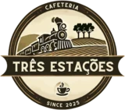

Quiero Café Sant'Ana do Livramento
Logotipo oficial
Cafeteria central próxima à fronteira com Rivera.
- Endereço: Rua dos Andradas, 567
- Bairro: Centro
- Cidade: Santana do Livramento - RS
- Telefone: (55) 99970-7996
Fronteira da Paz (Campanha Gaúcha)
Cafeterias reais em Sant'Ana do Livramento, do Centro da fronteira a Palomas.

Na Fronteira da Paz com Rivera, Livramento une comércio central ativo e turismo rural em Palomas.
No Centro busque as ruas Dos Andradas, Manduca Rodrigues, Rivadávia Corrêa e Conde de Porto Alegre.
Estabelecimentos reais conferidos em fontes públicas em 15/11/2026.
Logotipo oficial
Cafeteria central próxima à fronteira com Rivera.

Imagem ilustrativa
Café e bistrô familiar com bolos e tortas.
Imagem ilustrativa
Cafeteria, arte e gastronomia no Centro.
Imagem ilustrativa
Padaria tradicional com serviço diário de café.
Imagem ilustrativa
Cafeteria na Avenida General Daltro Filho.

Logotipo oficial
Café colonial e turismo rural em Palomas.
Aviso: Endereços, telefones e horários podem sofrer alterações. Confirme com o estabelecimento ou consulte nossas fontes de verificação.
Áreas de destaque pesquisadas: Centro, Livramento, Palomas. As ruas centrais facilitam pausas rápidas; Palomas oferece experiência rural de carro.
Consulte previamente os dias de atendimento do café rural em Palomas.
Ruas Dos Andradas, Rivadávia Corrêa e Manduca Rodrigues.
Sim, na Área Rural de Palomas.
Entre a fronteira e o pampa, Livramento reúne boas paradas para café.
Explore também guias próximos de café, cappuccino, doces e salgados no estado: